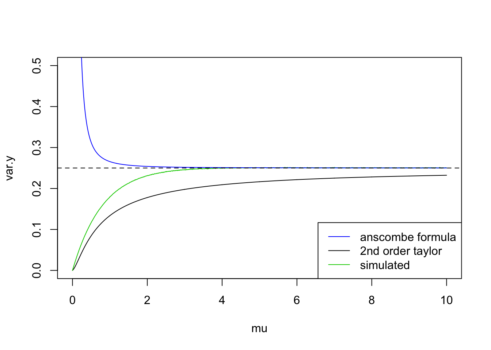

Last updated: 2018-11-11
workflowr checks: (Click a bullet for more information) ✔ R Markdown file: up-to-date
Great! Since the R Markdown file has been committed to the Git repository, you know the exact version of the code that produced these results.
✔ Environment: empty
Great job! The global environment was empty. Objects defined in the global environment can affect the analysis in your R Markdown file in unknown ways. For reproduciblity it’s best to always run the code in an empty environment.
✔ Seed:
set.seed(20180501)
The command set.seed(20180501) was run prior to running the code in the R Markdown file. Setting a seed ensures that any results that rely on randomness, e.g. subsampling or permutations, are reproducible.
✔ Session information: recorded
Great job! Recording the operating system, R version, and package versions is critical for reproducibility.
✔ Repository version: 4db2338
wflow_publish or wflow_git_commit). workflowr only checks the R Markdown file, but you know if there are other scripts or data files that it depends on. Below is the status of the Git repository when the results were generated:
Ignored files:
Ignored: .DS_Store
Ignored: .Rhistory
Ignored: .Rproj.user/
Ignored: data/.DS_Store
Untracked files:
Untracked: analysis/chipexoeg.Rmd
Untracked: analysis/talk1011.Rmd
Untracked: data/chipexo_examples/
Untracked: data/chipseq_examples/
Untracked: talk.Rmd
Untracked: talk.pdf
Unstaged changes:
Modified: analysis/literature.Rmd
Modified: analysis/sigma.Rmd
| File | Version | Author | Date | Message |
|---|---|---|---|---|
| Rmd | 4db2338 | Dongyue Xie | 2018-11-11 | wflow_publish(c(“analysis/index.Rmd”, “analysis/vstiter.Rmd”, “analysis/fda.Rmd”)) |
Observations are \(x\) count data which are modeled using Poisson distribution. Assume \(X\sim Pois(\mu)\), and \(\mu\) is smooth or ‘noisy’ smooth. Noisy smooth means \(\mu\) is conraminated by noise. We model it as \(\mu=h(m+\epsilon)\), where \(\epsilon\) is a random error \(\epsilon\sim N(0,\sigma^2)\) and \(h(\cdot)\) is a one-to-one continuous real valued function. The question is how to recover the smooth structure in \(\mu\).
Variance stabilizing transformation approach:
Derivation of anscombe transformation:
suppose \(X\sim Pois(\mu)\) and define \(t=X-\mu\), \(m=\mu+c\). Expand \(Y=\sqrt{X+c}=\sqrt{m+t}\) around \(t=0\) we have \(Y=m^{1/2}+\frac{1}{2}m^{-1/2}t-\frac{1}{8}m^{-3/2}t^2+\frac{1}{16}m^{-5/2}t^3+O(t^4)\).
Moments of \(t\): \(E(t)=0\), \(E(t^2)=\mu\), \(E(t^3)=\mu\), \(E(t^4)=3\mu^2+\mu\), \(E(t^6)=-\mu^4+15\mu^3+25\mu^2+\mu\)
Then the variance of \(Y\) is(using up to \(t^2\)) \(Var(Y)=\frac{1}{4}m^{-1}\mu+\frac{1}{64}m^{-3}(2\mu^2+\mu)-\frac{1}{8}m^{-2}\mu\) and if \(\mu\to\infty\), \(Var(Y)\to 1/4\).
How did Anscombe make \(c\) in nominator??? I think is to use higher order of t and let \(\mu\to\infty\).
\(Y=\sqrt{X+c}\) where \(c\) is a constant, \(c\geq 0\) and then \(Y\sim N(\sqrt{\mu+c},1/4)\) for large \(\mu\). (\(\mu\geq 4\) is already very good approx; \(\mu\geq 2\) is ok.) We can write \(Y=\sqrt{\mu+c}+N(0,1/4)\) and so \(Y=m+\epsilon+N(0,1/4)\). If \(\sigma^2\) is known, we can apply any Gaussian non-parametric smoothing methods to estiamte \(m\); if unkown, we might want to estiamte \(\sigma^2\) or \(\sigma^2+1/4\) first.
One problem is that \(Var(Y)\approx 1/4\) only holds for large enough \(\mu\) and what if we have observations like \(x=0\). One immidiate strategy is to use 0 variance for 0 \(x\). But the probability of observing \(x=0\) when \(\mu=1,2\) is 0.37, 0.14 respectively. So we may ask if there are better way to do this.
dpois(0,1)[1] 0.3678794dpois(0,2)[1] 0.1353353dpois(0,3)[1] 0.04978707One way is to approximate the variance using \(\mu\). Then we need a formula bwt var and mean. From the plot below, the simulated variance line is from \(10^5\) ramdom samples so it can be regared as the ‘true’ variance of \(Y=\sqrt{X+3/8}\); formula in anscombe’s paper is obtained when \(\mu\to\infty\) so it cannot deal with small mean; using 2nd order taylor series expnasion always under-estimate the variance. So we might need higher order approximation but it’s much more complicated.
# mu=1
c=3/8
# m=mu+c
# t=seq(-m,m,length.out = 1000)
# plot(t,sqrt(t+m),type='l')
# #taylor series expnasion around t=0
# taylor=sqrt(m)+1/sqrt(m)*t/2-m^(-1.5)/8*t^2+m^(-2.5)/16*t^3
# lines(t,taylor,col=4)
mu=seq(0,10,length.out = 1000)
m=mu+c
var.y=mu/(4*m)+(2*mu^2+mu)/(64*m^3)-mu/(8*m^2)
var.ans=1/4*(1+(32*c^2-52*c+17)/(32*mu^2))
var.sim=c()
set.seed(12345)
for (i in 1:length(mu)) {
x=rpois(1e6,mu[i])
var.sim[i]=var(sqrt(x+3/8))
}
plot(mu,var.y,type='l',ylim=c(0,0.5))
lines(mu,var.sim,col=3)
lines(mu,var.ans,col=4)
abline(a=0.25,b=0,lty=2)
legend('bottomright',c('anscombe formula','2nd order taylor','simulated'),col=c(4,1,3),lty=c(1,1,1))
A good tutorial on functional data analysis.
shim&stephens:
This is a ‘Function on scalar regression’ case: response(count) is functional data and covariate(genotype) is a scalar. For each subject \(i=1,...,n\), \(y_i(s)=x_i^T\beta(s)+\epsilon_i(s)\), where \(s\) is the grid of time points, \(|s|=T\) the total length of observations of subject \(i\). For example, if \(x_i=(1,x_{i1})\), then \(y_i(s)=\beta_0(s)+x_{i1}\beta_1(s)+\epsilon_i(s)\). So \(\beta_0(s)\) is global mean function of all subjects and \(\beta_1(s)\) is global coefficients function of all subjects. We can write the model as \(Y=XB+E\) where \(T\in R^{n*T}\), \(X\in R^{n*p}\), \(B\in R^{p*T}\) and \(E\) is n by T error matrix.
So the idea for dealing with data in shim and stephens, taking transformation and nugget effect into consideration is:
suppose we observe a sequence of \(x\) from an exponential family distribution, we do a transformation on X and obtain \(y=h(x)=m+\beta z+\epsilon_1+\epsilon_2\) where \(m\) has a smooth structure, \(\epsilon\)s are normal distributed random errors. Then apply DWT to \(y\) yeild \(Wy=Wm+W\beta z+W\epsilon_1+W\epsilon_2\). Then we can use similar methods in paper to do inference. A problem is how to estimate nugget effect.
sessionInfo()R version 3.5.1 (2018-07-02)
Platform: x86_64-apple-darwin15.6.0 (64-bit)
Running under: macOS High Sierra 10.13.6
Matrix products: default
BLAS: /Library/Frameworks/R.framework/Versions/3.5/Resources/lib/libRblas.0.dylib
LAPACK: /Library/Frameworks/R.framework/Versions/3.5/Resources/lib/libRlapack.dylib
locale:
[1] en_US.UTF-8/en_US.UTF-8/en_US.UTF-8/C/en_US.UTF-8/en_US.UTF-8
attached base packages:
[1] stats graphics grDevices utils datasets methods base
loaded via a namespace (and not attached):
[1] workflowr_1.1.1 Rcpp_0.12.18 digest_0.6.17
[4] rprojroot_1.3-2 R.methodsS3_1.7.1 backports_1.1.2
[7] git2r_0.23.0 magrittr_1.5 evaluate_0.11
[10] stringi_1.2.4 whisker_0.3-2 R.oo_1.22.0
[13] R.utils_2.7.0 rmarkdown_1.10 tools_3.5.1
[16] stringr_1.3.1 yaml_2.2.0 compiler_3.5.1
[19] htmltools_0.3.6 knitr_1.20 This reproducible R Markdown analysis was created with workflowr 1.1.1